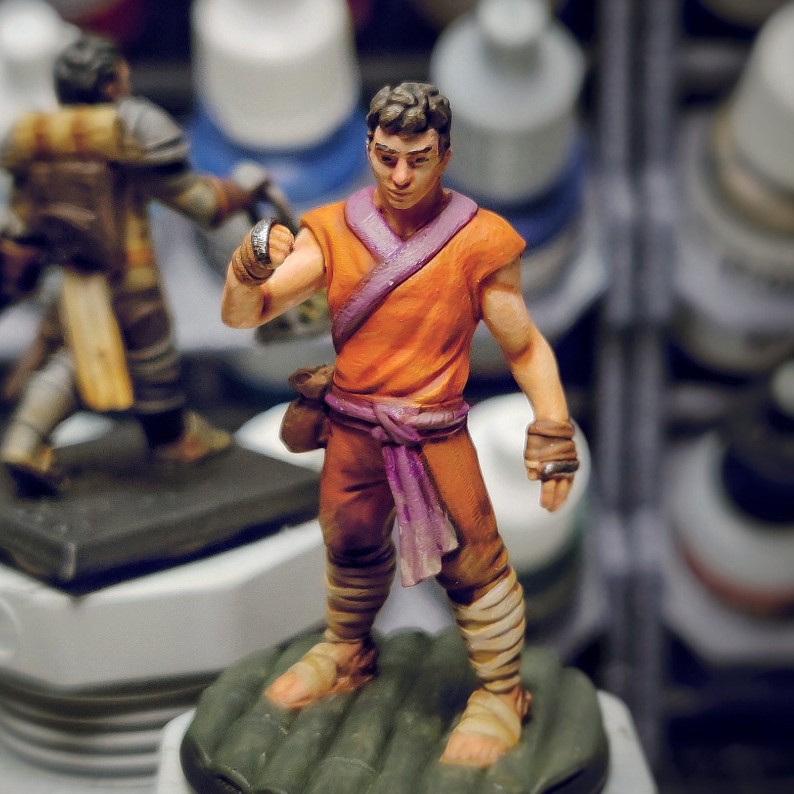
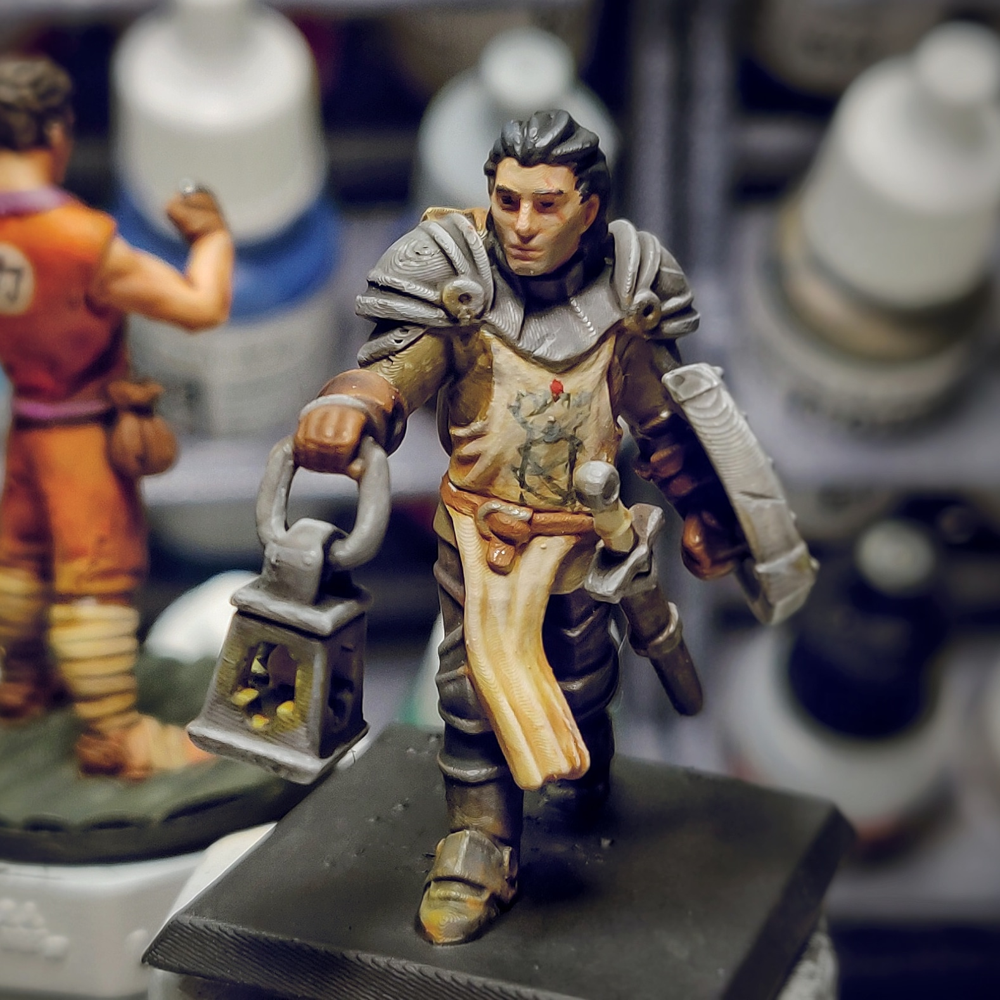
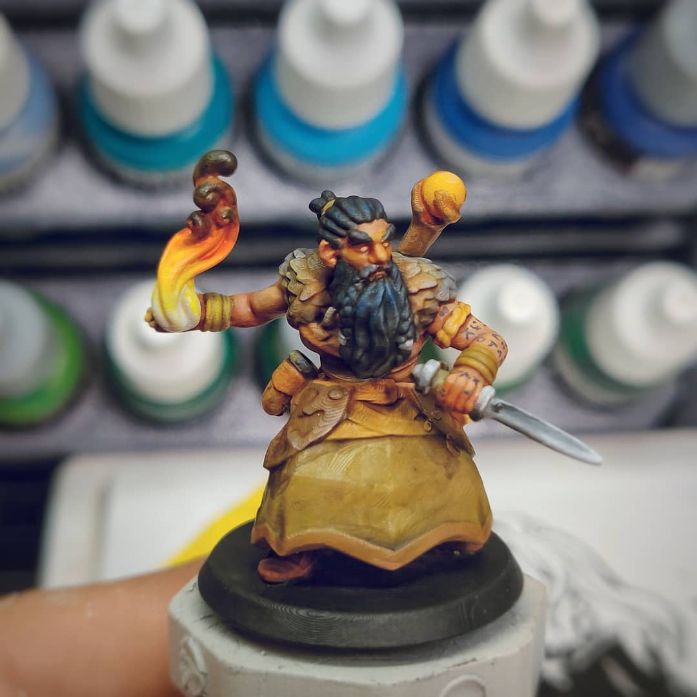
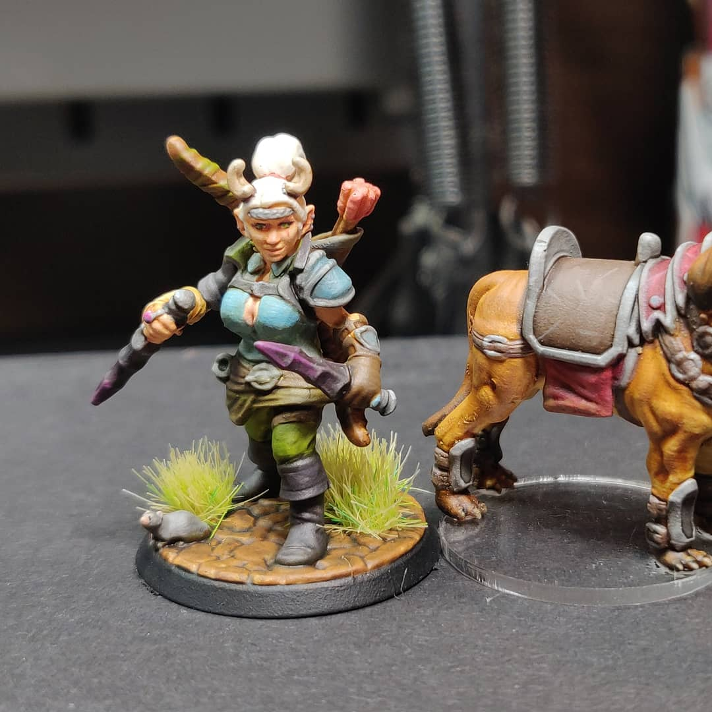

Hello Everyone
I am Pretty bad with HTML and CSS, If this is still here by the time you look at the page then please forgive my barbaric Webpage. I hope to improve on this quick quickly cause I am generally a pretty artistic person.
A little about Mick
- I have surviveded to the age of 26, in August that will have made it to 27.
- I live with My Girlfriend, our Two dogs and a roomate who is one of my best friends
- I worked at a Security Company for almost 6 years installing and servicing commercial security systems for customers like St. Lukes, St. Als, Boise State and both the City of Boise and State of Idaho.
- I got interested in code while learning to make indie games using the game enging "Gamemaker"
- I have been a Dungeons and Dragons DM for about 5 years as well and am currently running a homebrew campaign that has been going on for just over two years.
- I recently Got into 3D printing and have been trying to get better with 3d design so I can print my own custom things.
- One of hobbies is to paint the miniature characters for our DnD campaign.
- I Like to Collect things, From Records to Figures to dirty dishes at my desk.
- I enjoy all sorts of table top games but can also be pretty picky with them too. Not a fan of games with too many random mechanics.
- I seem to dip my toes into lots of different hobbies from Carpentry to traditional arts to 3D design, I seem to bounce around a lot.
- Coding to me is certainly a hobby I would like to take further than just the surface, and hopefully it will turn out to be a fulfilling career.
These are some of my group's DnD Characters.



